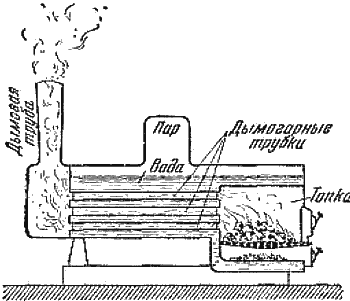

Можно ли нагреть тело, отнимая от него тепло?

Теплота, переходя от теплого тела к более холодному, нагревает его. Это настолько очевидно, что не требует каких-либо поясняющих примеров. Мы не знаем обратного случая, когда холодный предмет передал бы сам по себе своё тепло более нагретому телу.
Чтобы поднять температуру какого-нибудь тела, надо сообщить ему некоторую энергию. Проще всего это сделать путём передачи тепла от другого тела, имеющего более высокую температуру. Два тела с различной температурой, приведённые в соприкосновение, через некоторое время становятся одинаково нагретыми: тёплое тело отдаст часть своего тепла и при этом несколько остынет, холодное, поглощая это тепло, нагреется. В результате оба тела будут иметь одинаковую температуру. Всё это так привычно нам и столь закономерно, что мы не задумываемся над тем, что нагреется и что остынет, если, например, чайник с кипятком поставить на снег. Но сейчас мы познакомимся с одним явлением, в котором наблюдается, на первый взгляд, обратное.
На рисунке 10 показан разрез паровозного котла. В котёл налита вода. Получая через стенки жаровых труб тепло от топочных газов, она кипит. Над поверхностью воды в верхней части котла собирается пар, который называется паром, насыщающим пространство, или сухим паром. Однако практически при кипении воды в паровое пространство котла переходит не только пар, но и увлекаемые им капельки воды. Эти капельки, взвешенные в паре, являются его составной частью. Если даже вода кипит совершенно спокойно и пар не увлекает с собой капелек воды, то они всё равно могут сами образоваться в паре: проходя по трубопроводам или попадая в цилиндр паровой машины, сухой пар несколько остывает, а это неизбежно ведёт к конденсации. Такой пар, в котором имеются капельки, называют влажным, а иногда — мокрым паром.

Рис. 10. Схема паровозного котла.
Станем сжимать влажный пар, в котором по весу содержится половина или больше мелких капель воды. Сделаем это так, чтобы соотношение между количеством пара и жидкости или, как говорят, влажность пара, оставалось неизменным. При сжатии пар окажется пересыщенным и часть его превратится в жидкость. Чтобы сохранить влажность пара прежней, к нему придётся, очевидно, подвести некоторое количество тепла. Сконденсировавшаяся вода снова испарится, и влажность станет прежней. В этом случае подведённая теплота расходуется на испарение воды, что вполне естественно и понятно.
Но если мы возьмём влажный пар, в котором вода составляет меньше половины общего веса, то картина будет совершенно иная. Будем сжимать пар столь быстро, чтобы тепло не успевало приходить к нему извне и уходить от него в окружающее пространство. В этом случае мы заметим, что пар становится суше. Часть содержащейся в нём жидкой воды превращается в пар. Чтобы возвратить пару прежнюю влажность, надо отнять от пара часть тепла, передать его, например, холодной воде. После того как начальная влажность будет восстановлена, измерим температуру пара. Она окажется выше той, которую пар имел до сжатия.
Что же мы получили в результате? Мы сжали пар, потом отняли от него часть тепла и нагрели им воду, но сам пар при этом не остыл, а наоборот, нагрелся.
Не противоречит ли всё это тому, что мы утверждали вначале? Нет. Дело в том, что когда мы сжимаем не слишком влажный пар, мы сообщаем ему энергию. Эта энергия превращается в теплоту. И количество теплоты в этом случае так велико, что её с избытком хватает для поддержания прежней влажности пара при повышенном давлении и более высокой температуре. Избыток тепла мы передаём холодной воде. Таким образом, хотя от пара после сжатия и было отнято тепло, он оказался более нагретым, чем до сжатия. Это явление имеет важное практическое значение, особенно при проектировании паровых машин.
* * *
Мы познакомились с некоторыми наиболее интересными и важными свойствами воды и узнали, что вода во многом отличается от других жидкостей. Плотность и теплоёмкость воды изменяются с температурой совсем не так, как это обычно для большинства других веществ. При замерзании в обычных условиях вода не уменьшается в объёме, как почти все другие вещества, а увеличивается. Благодаря этому и поведение воды носит такой своеобразный характер. У воды очень большая удельная теплоёмкость и высокая удельная теплота плавления. Велика и удельная теплота испарения воды.
Однако этим далеко не исчерпываются все особенности воды. Вода выделяется также и по некоторым другим свойствам.
Если все эти отличия не бросаются нам в глаза, то только потому, что с водой мы встречаемся чаще всего и привыкли считать, что вода — самая типичная жидкость.
Слепая вера в воду, как в самое простое вещество, не таящее в себе никаких неожиданностей, нередко направляла исследования учёных по ложному пути и приводила к неверной оценке изучаемых явлений.
Вода имеет ещё одно замечательное свойство — она является лучшим растворителем. Ни одна другая жидкость не может конкурировать с водой по количеству различных веществ, способных в ней растворяться.
С водой как растворителем мы и познакомимся в следующем разделе.